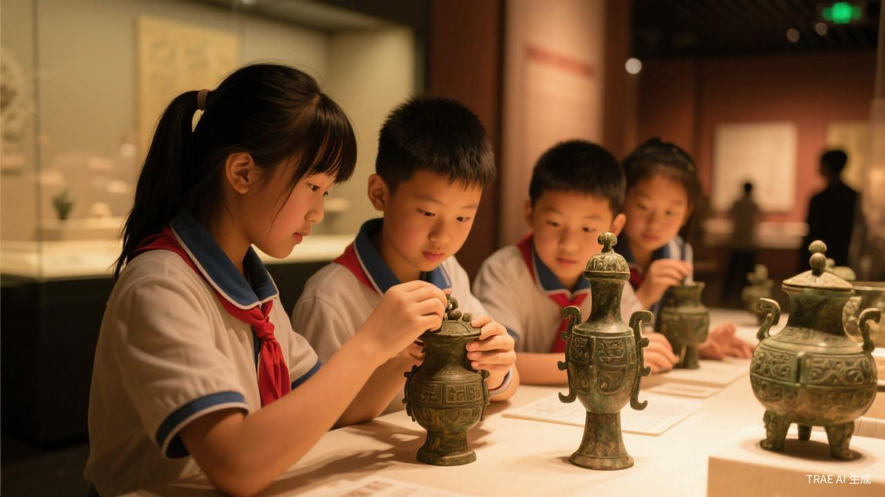

文创产品
将文物元素融入现代生活用品，让传统文化走进日常生活。 丝巾上印有敦煌飞天的飘逸，书签上刻着青铜器的纹饰， 茶具上绘着山水画的意境。每一件文创产品都是一次文化的传递， 让使用者在日常生活中感受中华美学的魅力。 故宫文创、敦煌文创等品牌已成为文化传播的成功典范。

数字藏品NFT
利用区块链技术为文物创建独一无二的数字藏品， 每件数字藏品都有唯一的身份标识和所有权证明。 用户可以在数字世界中收藏、展示和交易这些文物数字资产。 数字藏品不仅降低了文物收藏的门槛， 更为文物保护和博物馆运营开辟了新的资金来源。

主题展览
策划特色文物主题展，通过场景复原、多媒体互动、沉浸式体验等方式， 让观众身临其境地感受历史。从"千里江山"到"盛世华彩"， 从"丝路瑰宝"到"宫廷遗珍"，每一场展览都是一次穿越时空的文化之旅。 配合专家讲座、手工体验等互动活动，让展览更加生动有趣。

研学教育
面向青少年群体设计文物探索课程，通过"看、听、做、思"四维体验， 培养孩子们对传统文化的兴趣。课程内容包括博物馆参观、 文物修复体验、传统工艺制作、考古模拟发掘等。 让孩子们在动手实践中感受文明的魅力， 培养文化自信和民族认同感。

线上云展览
突破时空限制的线上展览平台，让全球观众随时随地欣赏珍贵文物。 高清影像、3D模型、VR全景等技术让线上观展体验媲美实地参观。 配合多语言讲解、智能导览、在线互动等功能， 让文物传播跨越国界，向世界讲述中国故事。

国际交流展
促进中外文明互鉴与交流，将中华文物带到世界各地， 同时引进国外优秀展览。通过文物对话，增进不同文明之间的理解与尊重。 丝绸之路文物展、故宫文物世界巡展等项目已成为中外文化交流的重要品牌， 展现了中华文明的开放包容与自信。